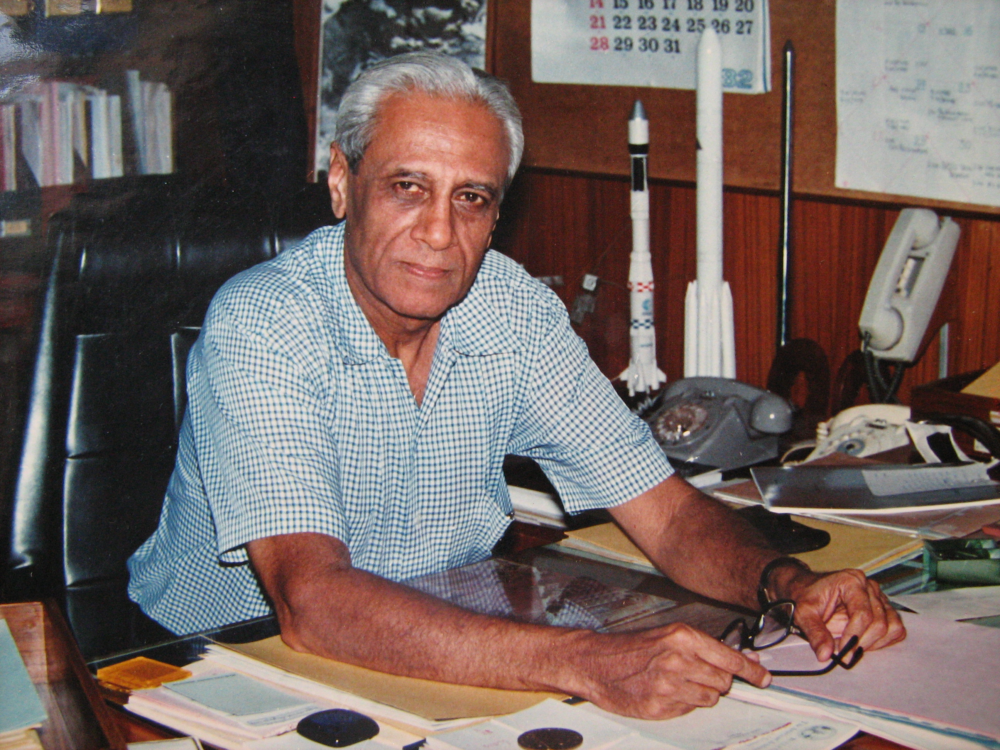
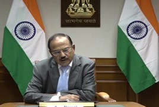
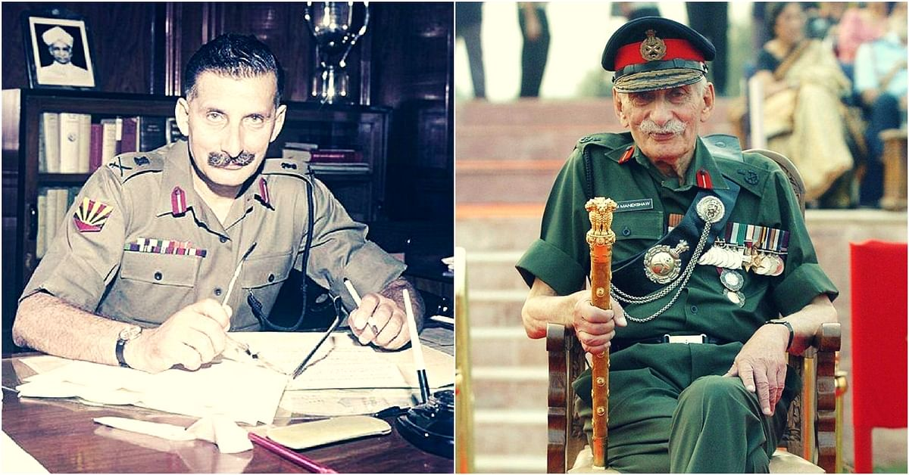
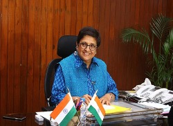

- Prof. Satish Dhawan was an Indian rocket scientist who was born in Srinagar, India and educated in India and the
United States.
- He is considered by the Indian scientific community to be the father of experimental fluid dynamics research in India
one of the most eminent researchers in the field of turbulence and boundary layers.
- He succeeded Vikram Sarabhai, the founder of the Indian space programme, as Chairman of ISRO in 1972.
- In the decade following his appointment he directed the Indian space programme through a period of extraordinary growth
and spectacular achievement.
- Prof. Satish Dhawan carried out pioneering experiments in rural education, remote sensing and satellite communications.
- The Indian satellite launch centre at Sriharikota, Andhra Pradesh was renamed as the Prof. Satish Dhawan Space Centre.
|

- Ajit Kumar Doval is the current National Security Advisor to the Prime Minister of India
- He previously served as the Director of the Intelligence Bureau in 2004–05, after spending a decade
as the head of its operation wing.
- At the age of just 27 he suppressed the infamous Thalassery riots in Kerala.
- He went undercover in Amritsar as a part of Operation Black Thunder. His mission was to target millitiants holed up in the
Golden Temple.He disguised himself as a rickshaw puller and convinced millitiants that he was a pakistani inteligence officer
and got very crucial info which led to the success of mission and he was awarded the Kirti Chakra.
- As NSA he conducted surgical strikes in POK in retaliation to the uri attack.
- In 2018 he conducted air strikes in Pakistan in response to the pulwama attack.
|

- Field Marshal Sam Hormusji Framji Jamshedji Manekshaw,widely known as Sam Manekshaw and Sam Bahadur
was the Chief of the Army Staff of the Indian Army during the Indo-Pakistani War of 1971.
- He was the first Indian Army officer to be promoted to the rank of field marshal.
- His active military career spanned four decades and five wars, beginning with service in the British
Indian Army in World War II.
- In World War II, he was awarded the Military Cross for gallantry.
- Manekshaw became the seventh chief of the army staff in 1969.
- He was awarded the Padma Vibhushan and the Padma Bhushan, the second and third highest civilian awards of India.
|

- Kiran Bedi is the first woman in India to join the officer ranks of the Indian Police Service
and started her service in 1972.
- She remained in service for 35 years before taking voluntary retirement in 2007.
- She started her career as an Assistant Superintendent of Police (ASP).
- She won the President's Police Medal in 1979.
- She introduced several reforms at Tihar Jail, which gained worldwide acclaim and
won her the Ramon Magsaysay Award in 1994.
- In 2003, She became the first Indian and first woman to be appointed as head of the United Nations Police
and Police Advisor in the United Nations Department of Peace Operations.
- She was one of the key leaders of the 2011 Indian anti-corruption movement,
and joined the Bharatiya Janata Party (BJP) in January 2015.
|